Multiple approaches are commonly used to study the mechanism of action of purified enzymes. A knowledge of the three-dimensional structure of a protein provides important information. The value of structural information is greatly enhanced by classical protein chemistry and modern methods of site-directed mutagenesis (changing the amino acid sequence of a protein in a defined way by genetic engineering; see Chapter 28) that permit enzymologists to examine the role of individual amino acids in structure and enzyme action. However, the rate of the catalyzed reaction can also reveal much about the enzyme. The study of reaction rates and how they change in response to changes in experimental parameters is known as kinetics. This is the oldest approach to understanding enzyme mechanism, and one that remains most important today. The following is a basic introduction to the kinetics of enzyme-catalyzed reactions. The more advanced student may wish to consult the texts and articles cited at the end of this chapter.
A discussion of kinetics must begin with some fundamental concepts. One of the key factors affecting the rate of a reaction catalyzed by a purified enzyme in vitro is the amount of substrate present, [S]. But studying the effects of substrate concentration is complicated by the fact that [S] changes during the course of a reaction as substrate is converted to product. One simplifying approach in a kinetic experiment is to measure the initial rate (or initial velocity), designated V0, when [S] is generally much greater than the concentration of enzyme. Then, if the time is sufficiently short following the start of a reaction, changes in [S] are negligible, and [S] can be regarded as a constant.
The effect on V0of varying [S] when the enzyme concentration is held constant is shown in Figure 8-11. At relatively low concentrations of substrate, V0 increases almost linearly with an increase in [S]. At higher substrate concentrations, V0 increases by smaller and smaller amounts in response to increases in [S]. Finally, a point is reached beyond which there are only vanishingly small increases in V0 with increasing [S] (Fig. 8-11). This plateau is called the maximum velocity, Vmax.
The ES complex is the key to understanding this kinetic behavior, just as it represented a starting point for the discussion of catalysis. The kinetic pattern in Figure 8-11 led Victor Henri to propose in 1903 that an enzyme combines with its substrate molecule to form the ES complex as a necessary step in enzyme catalysis. This idea was expanded into a general theory of enzyme action, particularly by Leonor Michaelis and Maud Menten in 1913. They postulated that the enzyme first combines reversibly with its substrate to form an enzymesubstrate complex in a relatively fast reversible step:
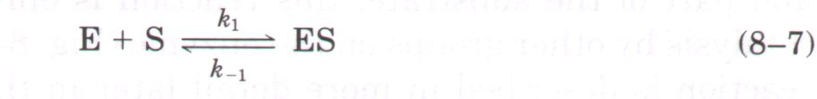
The ES complex then breaks down in a slower second step to yield the free enzyme and the reaction product P:
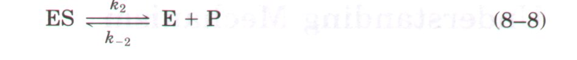
In this model the second reaction (Eqn 8-8) is slower and therefore limits the rate of the overall reaction. It follows that the overall rate of the enzyme-catalyzed reaction must be proportional to the concentration of the species that reacts in the second step, that is, ES.
| At any given instant in an enzyme-catalyzed reaction, the enzyme exists in two forms, the free or uncombined form E and the combined form ES. At low [S], most of the enzyme will be in the uncombined form E. Here, the rate will be proportional to [SJ because the equilibrium of Equation 8-7 will be pushed toward formation of more ES as [S] is increased. The maximum initial rate of the catalyzed reaction (Vmax) is observed when virtually all of the enzyme is present as the ES complex and the concentration of E is vanishingly small. Under these conditions, the enzyme is "saturated" with its substrate, so that further increases in [S] have no effect on rate. This condition will exist when [S] is sufficiently high that essentially all the free enzyme will have been converted into the ES form. After the ES complex breaks down to yield the product P, the enzyme is free to catalyze another reaction. The saturation effect is a distinguishing characteristic of enzyme catalysts and is responsible for the plateau observed in Figure 8-11. | 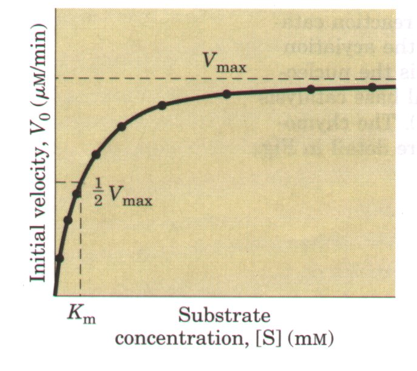 Figure 8-11 Effect of substrate concentration on the initial velocity of an enzyme-catalyzed reaction. Vmax can only be approximated from such a plot, because V0 will approach but never quite reach Vmax. The substrate concentration at which V0 is half maximal is Km, the Michaelis-Menten constant. The concentration of enzyme E in an experiment such as this is generally so low that [S]>>[E] even when [S] is described as low or relatively low. The units given are typical for enzyme-catalyzed reactions and are presented only to help illustrate the meaning of V0 and [S]. (Note that the curve describes part of a rectangular hyperbola, with one asymptote at Vmax. If the curve were continued below [S] = 0, it would approach a vertical asymptote at [S] = -Km. ) |
| When the enzyme is first mixed with a large excess of substrate, there is an initial period called the pre-steady state during which the concentration of the ES complex builds up. The pre-steady state is usually too short to be easily observed. The reaction quickly achieves a steady state in which [ES] (and the concentration of any other intermediates) remains approximately constant over time. The measured V0 generally reflects the steady state even though V0 is limited to early times in the course of the reaction. Michaelis and Menten concerned themselves with the steady-state rate, and this type of analysis is referred to as steady-state kinetics. | 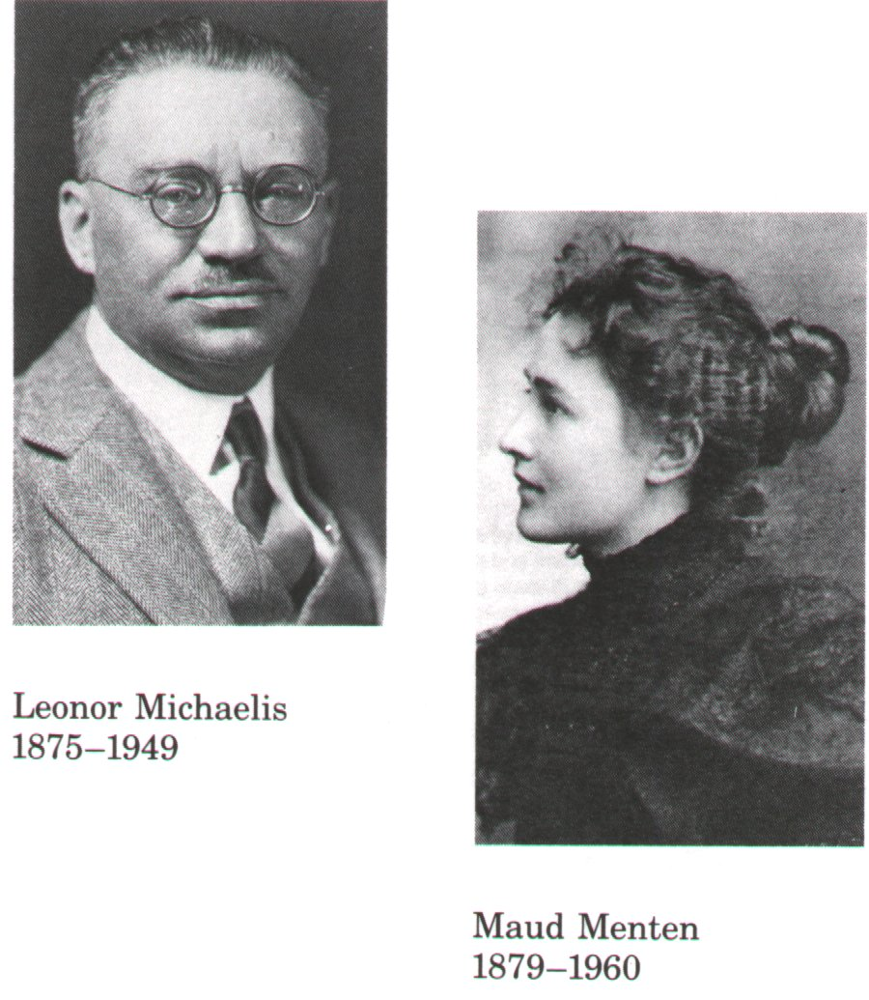 |
Figure 8-11 shows the relationship between [S] and V0 for an enzymatic reaction. The curve expressing this relationship has the same general shape for most enzymes (it approaches a rectangular hyperbola ). The hyperbolic shape of this curve can be expressed algebraically by the Michaelis-Menten equation, derived by these workers starting from their basic hypothesis that the rate-limiting step in enzymatic reactions is the breakdown of the ES complex to form the product and the free enzyme.
The important terms are [S], V0, Vmax, and a constant called the Michaelis-Menten constant or Km. All of these terms are readily measured experimentally.
Here we shall develop the basic logic and the algebraic steps in a modern derivation of the Michaelis-Menten equation. The derivation starts with the two basic reactions involved in the formation and breakdown of ES (Eqns 8-7 and 8-8). At early times in the reaction, the concentration of the product [P] is negligible and the simplifying assumption is made that h-z can be ignored. The overall reaction then reduces to
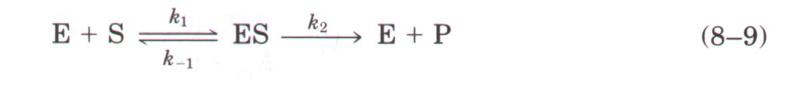
V0 is determined by the breakdown of ES to give product, which is determined by [ES]:
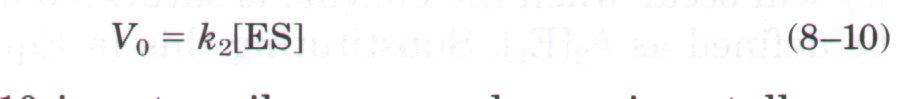
As [ES] in Equation 8-10 is not easily measured experimentally, we must begin by finding an alternative expression for [ES]. First, we will introduce the term [Et], representing the total enzyme concentration (the sum of the free and substrate-bound enzyme). Free or unbound enzyme can then be represented by [Et] - [ES]. Also, because [S] is ordinarily far greater than [Et], the amount of substrate bound by the enzyme at any given time is negligible compared with the total [S]. With these in mind, the following steps will lead us to an expression for V0 in terms of parameters that are easily measured.
Step l. The rates of formation and breakdown of ES are determined by the steps governed by the rate constants kl (formation) and k-1 + k2 (breakdown), according to the expressions
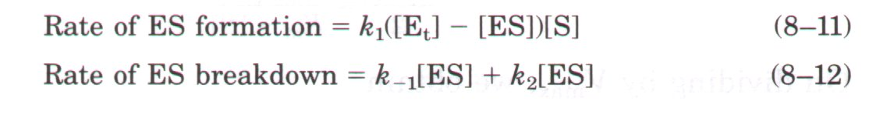
Step 2. An important assumption is now made that the initial rate of reaction reflects a steady state in which [ES] is constant, i.e., the rate of formation of ES is equal to its rate of breakdown. This is called the steady-state assumption. The expressions in Equations 8-11 and 8-12 can be equated at the steady state, giving
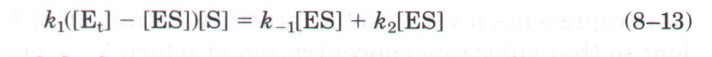
Step 3. A series of algebraic steps is now taken to solve Equation 8-13 for [ES]. The left side is multiplied out and the right side is simplified to give
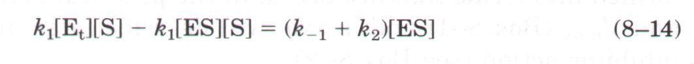
Adding the term k1[ES][S] to both sides of the equation and simplifying gives
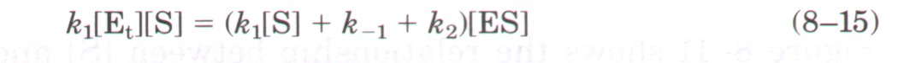
Solving this equation for [ES] gives
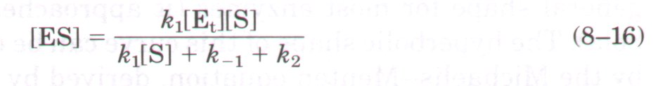
This can now be simplified further, in such a way as to combine the rate constants into one expression:
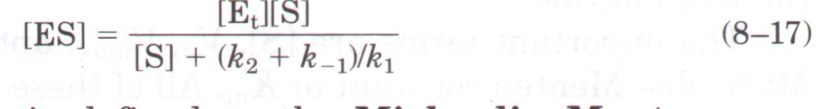
The term (k2 + k-1)/k1 is defined as the Michaelis-Menten constant, Km. Substituting this into Equation 8-17 simplifies the expression to
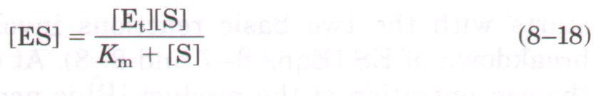
Step 4. V0 can now be expressed in terms of [ES]. Equation 8-18 is used to substitute for [ES] in Equation 8-10, giving
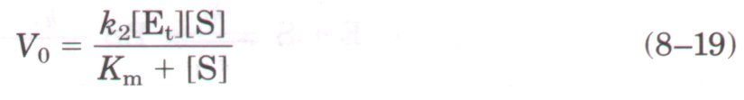
This equation can be further simplified. Because the maximum velocity will occur when the enzyme is saturated and [ES] = [Et], Vmax can be defined as k2[Et]. Substituting this in Equation 8-19 gives
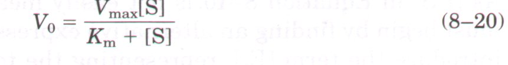
This is the Michaelis-Menten equation, the rate equation for a onesubstrate, enzyme-catalyzed reaction. It is a statement of the quantitative relationship between the initial velocity V0, the maximum initial Velocity Vmax, and the initial substrate concentration [S], all related through the Michaelis-Menten constant Km. Does the equation fit the facts? Yes; we can confirm this by considering the limiting situations where [S] is very high or very low, as shown in Figure 8-12.
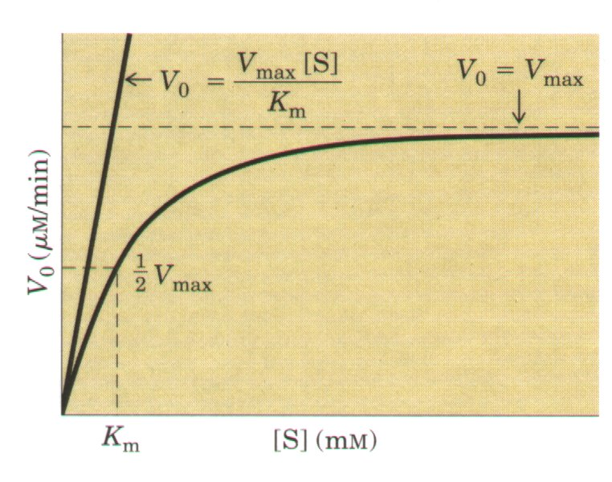 Figure 8-12 Dependence of initial velocity on substrate concentration, showing the kinetic parameters that define the limits of the curve at high and low ISI. At low [S], Km>>[S], and the [S] term in the denominator of the Michaelis-Menten equation (Eqn 8-20) becomes insignificant; the equation simplifies to V0 = Vmax[S]/Km and V0, exhibits a linear dependence on [S], as observed. At high [S], where [S]>>Km, the Km term in the denominator of the Michaelis-Menten equation becomes insignificant, and the equation simplifies to V0 = Vmax; this is consistent with the plateau observed at high [S]. The Michaelis-Menten equation is therefore consistent with the observed dependence of V0 on [S], with the shape of the curve defined by the terms Vmax/Km, at low [S] and Vmax at high [S]. |
An important numerical relationship emerges from the MichaelisMenten equation in the special case when V0 is exactly one-half Vmax (Fig. 8-12). Then
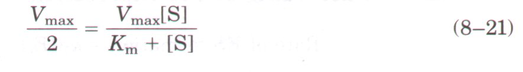
On dividing by Vmax, we obtain
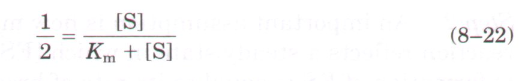
Solving for Km, we get Km + [S] = 2[S], or
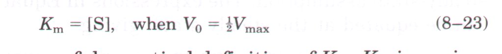
This represents a very useful, practical definition of Km: Km is equivalent to that substrate concentration at which V0 is one-half Vmax. Note that Km has units of molarity.
The Michaelis-Menten equation (8-20) can be algebraically transformed into forms that are useful in the practical determination of Km and Vmax (Box 8-1) and, as we will describe later, in the analysis of inhibitor action ( see Box 8-2 ).
BOX 8-1Transformations of the Michaelis-Menten Equation: The Douhle-Reciprocal Plot
which simplifies to 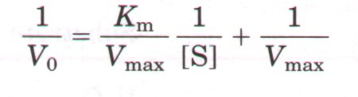 This equation is a transform of the MichaelisMenten equation called the Lineweaver-Burk equation. For enzymes obeying the MichaelisMenten relationship, a plot of 1/V0 versus 1/[S] (the "double-reciprocal" of the V0-versus-[S] plot we have been using to this point) yields a straight line (Fig. 1). This line will have a slope of Km/Vmax, an intercept of 1/Vmax on the 1/V0 axis, and an intercept of -1/Km on the 1/[S] axis. The double-reciprocal presentation, also called a Lineweaver-Burk plot, has the great advantage of allowing a more accurate determination of Vmax, which can only be approximated from a simple plot of V0 versus [S] (see Fig. 8-12). Other transformations of the MichaelisMenten equation have been derived and used. Each has some particular advantage in analyzing enzyme kinetic data. The double-reciprocal plot of enzyme reaction rates is very useful in distinguishing between certain types of enzymatic reaction mechanisms (see Fig. 8-14) and in analyzing enzyme inhibition (see Box 8-2). |
It is important to distinguish between the Michaelis-Menten equation and the specific kinetic mechanism upon which it was originally based. The equation describes the kinetic behavior of a great many enzymes, and all enzymes that exhibit a hyperbolic dependence of V0 on [S] are said to follow Michaelis-Menten kinetics. The practical rule that Km = [S] when V0 =1/2Vmax (Eqn 8-23) holds for all enzymes that follow Michaelis-Menten kinetics (the major exceptions to MichaelisMenten kinetics are the regulatory enzymes, discussed at the end of this chapter). However, this equation does not depend on the relatively simple two-step reaction mechanism proposed by Michaelis and Menten (Eqn 8-9). Many enzymes that follow Michaelis-Menten kinetics have quite different reaction mechanisms, and enzymes that catalyze reactions with six or eight identifiable steps will often exhibit the same steady-state kinetic behavior. Even though Equation 8-23 holds true for many enzymes, both the magnitude and the real meaning of Vmax and Km can change from one enzyme to the next. This is an important limitation of the steady-state approach to enzyme kinetics. Vmax and Km are parameters that can be obtained experimentally for any given enzyme, but by themselves they provide little information about the number, rates, or chemical nature of discrete steps in the reaction. Steady-state kinetics nevertheless represents the standard language by which the catalytic efficiencies of enzymes are characterized and compared. We now turn to the application and interpretation of the terms Vmax and Km.
| A simple graphical method for obtaining an approximate value for Km is shown in Figure 8-12. A more convenient procedure, using a double-reciprocal plot, is presented in Box 8-1. The Km can vary greatly from enzyme to enzyme, and even for different substrates of the same enzyme (Table 8-6). The term is sometimes used (inappropriately) as an indication of the affmity of an enzyme for its substrate. | 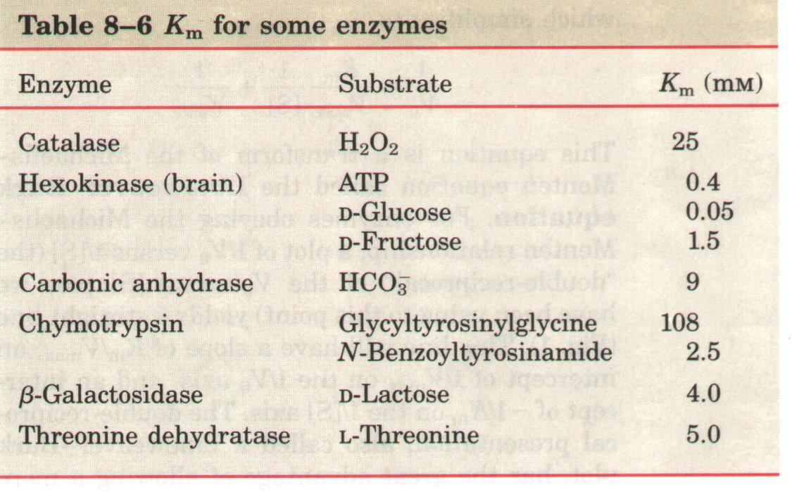 |
The actual meaning of Km depends on specific aspects of the reaction mechanism such as the number and relative rates of the individual steps of the reaction. Here we will consider reactions with two steps. On page 214 Kmis defined by the expression
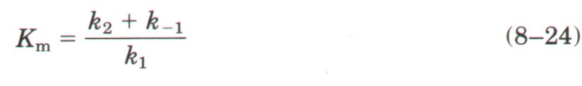
For the Michaelis-Menten reaction, k2 is rate-limiting; thus k2 << k-1 and km reduces to k-1/k1 , which is defined as the dissociation constant, Ks, for the ES complex. Where these conditions hold, Km does represent a measure of the affinity of the enzyme for the substrate in the ES complex. However, this scenario does not apply to all enzymes. Sometimes k2>>k-l, and then Km= k2/kl. In other cases, k2 and k-l are comparable, and Km remains a more complex function of all three rate constants (Eqn 8-24). These situations were first analyzed by Haldane along with George E. Briggs in 1925. The Michaelis-Menten equation and the characteristic saturation behavior of the enzyme still apply, but Km cannot be considered a simple measure of substrate af fmity. Even more common are cases in which the reaction goes through multiple steps after formation of the ES complex; Km can then become a very complex function of many rate constants.
Vmax also varies greatly from one enzyme to the next. If an enzyme reacts by the two-step Michaelis-Menten mechanism, Vmax is equivalent to k2[Et], where k2 is the rate-limiting step. However, the number of reaction steps and the identity of the rate-limiting step(s) can vary from enzyme to enzyme. For example, consider the quite common situation where product release, EP→E + P, is rate-limiting:
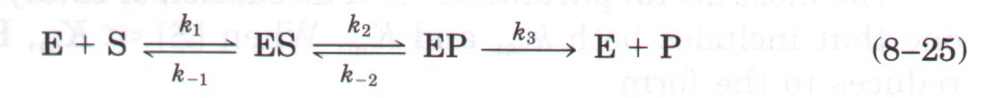
In this case, most of the enzyme is in the EP form at saturation, and Vmax = k3[Et]. It is useful to define a more general rate constant, kcat, to describe the limiting rate of any enzyme-catalyzed reaction at saturation. If there are several steps in the reaction, and one is clearly rate-limiting, kcat is equivalent to the rate constant for that limiting step. For the Michaelis-Menten reaction, kcat = k2. For the reaction of Equation 8-25, kcat = k3. When several steps are partially rate-limiting, kcat can become a complex function of several of the rate constants that define each individual reaction step. In the Michaelis-Menten equation, kcat = Vmax/[Et], and Equation 8-19 becomes
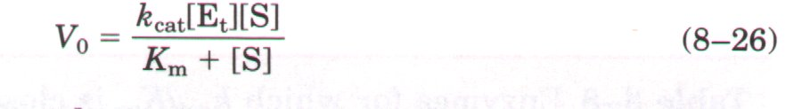
The constant km is a first-order rate constant with units of reciprocal time, and is also called the turnover number. It is equivalent to the number of substrate molecules converted to product in a given unit of time on a single enzyme molecule when the enzyme is saturated with substrate. The turnover numbers of several enzymes are given in Table 8-7.
| The kinetic parameters kcat and Km are generally useful for the study and comparison of different enzymes, whether their reaction mechanisms are simple or complex. Each enzyme has optimum values of kcat and Km that reflect the cellular environment, the concentration of substrate normally encountered in vivo by the enzyme, and the chemistry of the reaction being catalyzed. | 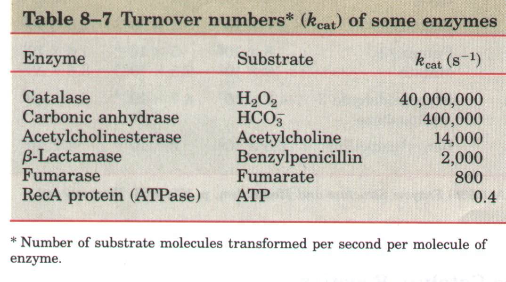 |
Comparison of the catalytic efficiency of different enzymes requires the selection of a suitable parameter. The constant kcat is not entirely satisfactory. Two enzymes catalyzing different reactions may have the same kcat (turnover number), yet the rates of the uncatalyzed reactions may be different and thus the rate enhancement brought about by the enzymes may differ greatly. Also, kcat reflects the properties of an enzyme when it is saturated with substrate, and is less useful at low [S]. The constant Km is also unsatisfactory by itself. As shown by Equation 8-23, Km must have some relationship to the normal [S] found in the cell. An enzyme that acts on a substrate present at a very low concentration in the cell will tend to have a lower Km than an enzyme that acts on a substrate that is normally abundant.
The most useful parameter for a discussion of catalytic efficiency is one that includes both kcat and Km. When [S] << Km, Equation 8-26 reduces to the form
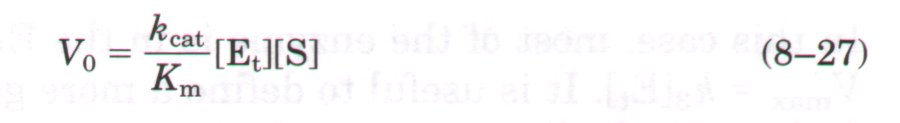
| V0 in this case depends on the concentration of two reactants, Et and S; therefore this is a second-order rate law and the constant kcat/Km is a second-order rate constant. The factor keat Km is generally the best kinetic parameter to use in comparisons of catalytic efficiency. There is an upper limit to kcat/Km, imposed by the rate at which E and S can diffuse together in an aqueous solution. This diffusion-controlled limit is 108 to 109 M-ls-l, and many enzymes have a value of kcat/Km near this range (Table 8-8). | 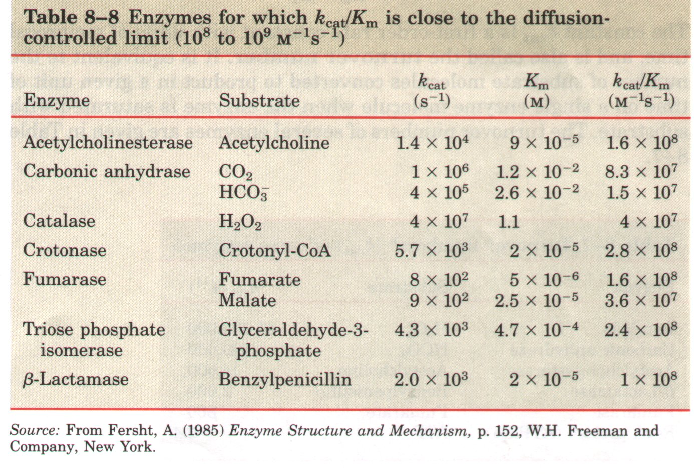 |
We have seen how [S] affects the rate of a simple enzyme reaction (S→P) in which there is only one substrate molecule. In many enzymatic reactions, however, two (or even more) different substrate molecules bind to the enzyme and participate in the reaction. For example, in the reaction catalyzed by hexokinase, ATP and glucose are the substrate molecules, and ADP and glucose-6-phosphate the products:
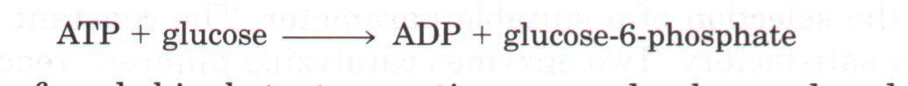
| The rates of such bisubstrate
reactions can also be analyzed by the Michaelis-Menten
approach. Hexokinase has a characteristic Km for each of its
two substrates (Table 8-6). Enzymatic reactions in which there are two substrates (bisubstrate reactions) usually involve transfer of an atom or a functional group from one substrate to the other. Such reactions proceed by one of several different pathways. In some cases, both substrates are bound to the enzyme at the same time at some point in the course of the reaction, forming a ternary complex (Fig. 8-13a). Such a complex can be formed by substrates binding in a random sequence or in a specific order. No ternary complex is formed when the first substrate is converted to product and dissociates before the second substrate binds. An example of this is the ping-pong or double-displacement mechanism (Fig. 8-13b). Steady-state kinetics can often help distinguish among these possibilities (Fig. 8-14). |
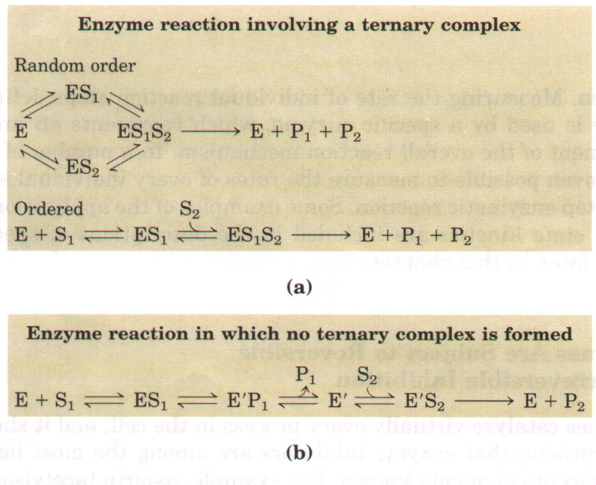 Figure 8-13 Common mechanisms for enzymecatalyzed bisubstrate reactions. In (a) the enzyme and both substrates come together to form a ternary complex. In ordered binding, substrate 1 must be bound before substrate 2 can bind productively. In (b) an enzyme-substrate complex forms, a product leaves the complex, the altered enzyme forms a second complex with another substrate molecule, and the second product leaves, regenerating the enzyme. Substrate 1 may transfer a functional group to the enzyme (forming E' ), which is subsequently transferred to substrate 2. This is a pingpong or double-displacement mechanism. |
| We have introduced kinetics as
a set of methods used to study the steps in an enzymatic
reaction, but have also outlined the limitations of the
most common kinetic parameters in providing such
information. The two most important experimental
parameters provided by steady-state kinetics are kcat and kcat/Km. Variation in
these parameters with changes in pH or temperature can
sometimes provide additional information about steps in a
reaction pathway. In the case of bisubstrate reactions,
steady-state kinetics can help determine whether a
ternary complex is formed during the reaction (Fig.
8-14). A more complete picture generally requires more
sophisticated kinetic methods that go beyond the scope of
an introductory text. Here, we briefly introduce one of
the most important kinetic approaches for studying
rea.ction mechanisms, pre-steady state kinetics. A complete description of an enzyme-catalyzed reaction requires direct measurement of the rates of individual reaction steps, for example the measurement of the association of enzyme and substrate to form the ES complex. It is during the pre-steady state that the rates of many reaction steps can be measured independently.Reaction conditions are adjusted to facilitate the measurement of events that occur during the reaction of a single substrate molecule. Because the presteady state phase of a reaction is generally very short, this often requires specialized techniques for very rapid mixing and sampling. |
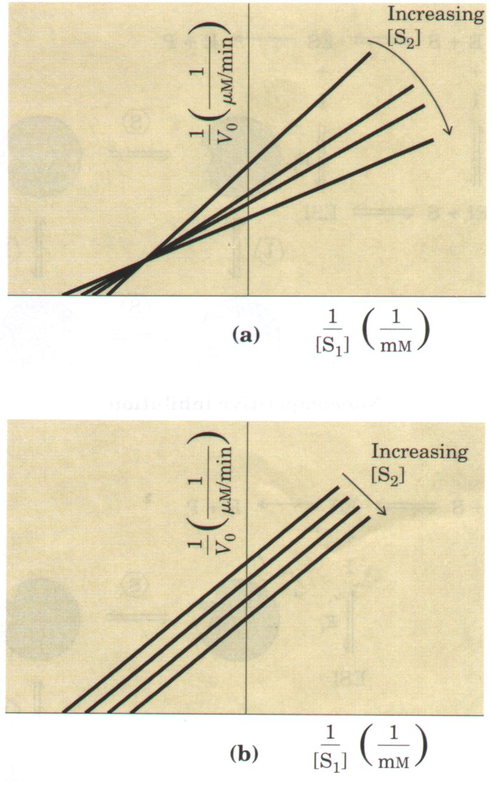 Figure 8-14 Steady-state kinetic analysis of bisubstrate reactions. In these double-reciprocal plots (see Box 8-1), the concentration of substrate 1 is varied while the concentration of substrate 2 is held constant. This is repeated for several values of [S2], generating several separate lines. The lines intersect if a ternary complex is formed in the reaction (a), but are parallel if the reaction goes through a ping-pong or double-displacement pathway (b). |
One objective is to gain a complete and quantitative picture of the energetic course of a reaction. As we have already noted, reaction rates and equilibria are related to the changes in free energy that occur during thereaction. Measuring the rate of individual reaction steps defines how energy is used by a specific enzyme, which represents an important component of the overall reaction mechanism. In a number of cases it has proven possible to measure the rates of every individual step in a multistep enzymatic reaction. Some examples of the application of presteady state kinetics are included in the descriptions of specific enzymes later in this chapter.
| Enzymes catalyze virtually
every process in the cell, and it should not be
surprising that enzyme inhibitors are among the most
important pharmaceutical agents known. For example,
aspirin (acetylsalicylate) inhibits the enzyme that
catalyzes the first step in the synthesis of
prostaglandins, compounds involved in many processes
including some that produce pain. The study of enzyme
inhibitors also has provided valuable information about
enzyme mechanisms and has helped define some metabolic
pathways. There are two broad classes of enzyme
inhibitors: reversible and irreversible. One common type of reversible inhibition is called competitive (Fig. 8-15). A competitive inhibitor competes with the substrate for the active site of an enzyme, but a reaction usually does not occur once the inhibitor (I) is bound. While the inhibitor occupies the active site it prevents binding by the substrate. Competitive inhibitors are often compounds that resemble the substrate and combine with the enzyme to form an EI complex (Fig. 8-15). This type of inhibition can be analyzed quantitatively by steady-state kinetics (Box 8-2). Because the inhibitor binds reversibly to the enzyme, the competition can be biased to favor the substrate simply by adding more substrate. When enough substrate is present the probability that an inhibitor molecule will bind is minimized, and the reaction exhibits a normal Vmax. However, the [S] at which V0 = 1/2Vmax, the Km, will increase in the presence of inhibitor. This effect on the apparent Km, and the absence of an effect On Vmax is diagnostic of competitive inhibition, and is readily revealed in a double-reciprocal plot (Box 8-2). The equilibrium constant for inhibitor binding, K1, can be obtained from the same plot. Competitive inhibition is used therapeutically to treat patients who have ingested methanol, a solvent found in gas-line antifreeze. Methanol is converted to formaldehyde by the action of the enzyme alcohol dehydrogenase. Formaldehyde damages many tissues, and blindness is a common result because the eyes are particularly sensitive. Ethanol competes effectively with methanol as a substrate for alcohol dehydrogenase. The therapy for methanol poisoning is intravenous infusion of ethanol, which slows the formation of formaldehyde suff'iciently so that most of the methanol can be excreted harmlessly in the urine. |
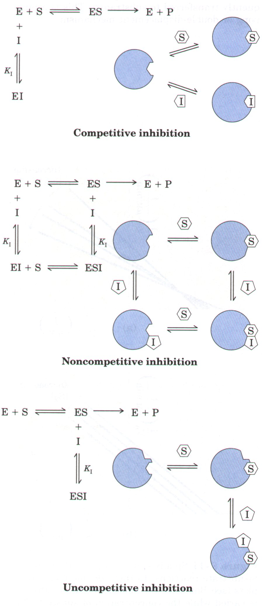 Figure 8-15 Three types of reversible inhibition. Competitive inhibitors bind to the enzyme's active site. Noncompetitive inhibitors generally bind at a separate site. Uncompetitive inhibitors also bind at a separate site, but they bind only to the ES complex. K1 is the equilibrium constant for inhibitor binding. |
B O X 8-2Kinetic Tests for Determining Inhibition MechanismsThe double-reciprocal plot (see Box 8-1) offers an easy way of determining whether an enzyme inhibitor is competitive or noncompetitive. Two sets of rate experiments are carried out, in both of which the enzyme concentration is held constant. In the first set, [S] is also held constant, permitting measurement of the effect of increasing inhibitor concentration [I] on the initial rate V0 (not shown). In the second set, [I] is held constant but [S] is varied. In the double-reciprocal plot 1/V0 is plotted versus 1/[S]. Figure 1 shows a set of double-reciprocal plots obtained in the absence of the inhibitor and with two different concentrations of a competitive inhibitor. Increasing [I] results in the production of a family of lines with a common intercept on the 1/V0 axis but with different slopes. Because the intercept on the 1/V0 axis is equal to l/Vmax, we can see that Vmax is unchanged by the presence of a competitive inhibitor. That is, regardless of the concentration of a competitive inhibitor, there is always some high substrate concentration that will displace the inhibitor from the enzyme's active site. In noncompetitive inhibition, similar plots of the rate data give the family of lines shown in Figure 2, having a common intercept on the 1/[S] axis. This indicates that Km for the substrate is not altered by a noncompetitive inhibitor, but Vmax decreases.
|
Two other types of reversible inhibition, noncompetitive and uncompetitive, are often defined in terms of one-substrate enzymes but in practice are only observed with enzymes having two or more substrates. A noncompetitive inhibitor is one that binds to a site distinct from that which binds the substrate (Fig. 8-15); inhibitor binding does not block substrate binding (or vice versa). The enzyme is inactivated when inhibitor is bound, whether or not substrate is also present. The inhibitor effectively lowers the concentration of active enzyme and hence lowers the apparent Vmax (Vmax= Kcat[Et]). There is often little or no effect on Km. These characteristic effects of a noncompetitive inhibitor are further analyzed in Box 8-2. An uncompetitive inhibitor (Fig. 8-15) also binds at a site distinct from the substrate. However, an uncompetitive inhibitor will bind only to the ES complex. (The noncompetitive inhibitor binds to either free enzyme or the ES complex. )
With these definitions in mind, consider a bisubstrate enzyme with separate binding sites within the active site for two substrates, Sl and S2, and suppose an inhibitor (I) binds to the site for S2. If Sl and S2 normally bind to the enzyme independently (in random order), I may act as a competitive inhibitor of S2. However, since I binds at a site distinct from the site for Sl, but will exclude S2 and thereby block the reaction of Sl, I may act as a noncompetitive inhibitor of Sl. Alternatively, if Sl normally binds to the enzyme before S2 (ordered binding), then I may bind only to the ESl complex and act as an uncompetitive inhibitor of Sl. These are only a few of the scenarios that can be encountered with reversible inhibition of bisubstrate enzymes, and the effects of these inhibitors can provide much information about reaction mechanisms.
| Irreversible inhibitors are those that combine with or destroy a functional group on the enzyme that is essential for its activity. Formation of a covalent link between an irreversible inhibitor and an enzyme is common. Irreversible inhibitors are very useful in studying reaction mechanisms. Amino acids with key catalytic functions in the active site can sometimes be identified by determining which amino acid is covalently linked to an inhibitor after the enzyme is inactivated. An example is shown in Figure 8-16. | 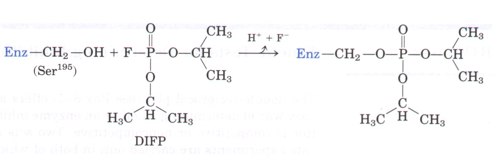 Figure 8-16 Reaction of chymotrypsin with diisopropylfluorophosphate (DIFP). This reaction led to the discovery that Serl95 is the key activesite serine. DIFP also acts as a poison nerve gas because it irreversibly inactivates the enzyme acetylcholinesterase by a mechanism similar to that shown here. Acetylcholinesterase cleaves the neurotransmitter acetylcholine, an essential step in normal functioning of the nervous system. |
A very special class of irreversible inhibitors are the suicide inhibitors. These compounds are relatively unreactive until they bind to the active site of a specific enzyme. A suicide inhibitor is designed to carry out the first few chemical steps of the normal enzyme reaction. Instead of being transformed into the normal product, however, the inhibitor is converted to a very reactive compound that combines irreversibly with the enzyme. These are also called mechanism-based inactivators, because they utilize the normal enzyme reaction mechanism to inactivate the enzyme. These inhibitors play a central role in the modern approach to obtaining new pharmaceutical agents, a process called rational drug design. Because the inhibitor is designed to be specific for a single enzyme and is unreactive until within that enzyme's active site, drugs based on this approach are often very effective and have few side effects (see Box 21-1).
| Enzymes have an optimum pH or
pH range in which their activity is maximal (Fig. 8-17);
at higher or lower pH their activity decreases. This is
not surprising because some amino acid side chains act as
weak acids and bases that perform critical functions in
the enzyme active site. The change in ionization state
(titration) of groups in the active site is a common
reason for the activity change, but it is not the only
one. The group being titrated might instead affect some
critical aspect of the protein structure. Removing a
proton from a His residue outside the active site might,
for example, eliminate an ionic interaction essential for
stabilization of the active conformation of the enzyme.
Less common are cases in which the group being titrated
is on the substrate. The pH range over which activity changes can provide a clue as to what amino acid is involved (see Table 5-1). A change in enzyme activity near pH 7.0, for example, often reflects titration of a His residue. The effects of pH must be interpreted with some caution, however. In the closely packed environment of a protein, the pK of amino acid side chains can change significantly. For example, a nearby positive charge can lower the pK of a Lys residue, and a nearby negative charge can increase its pK. Such effects sometimes result in a pK that is perturbed by 2 or more pH units from its normal value. One Lys residue in the enzyme acetoacetate decarboxylase has a pK of 6.6 (10.5 is normal) due to electrostatic effects of nearby positive charges. |
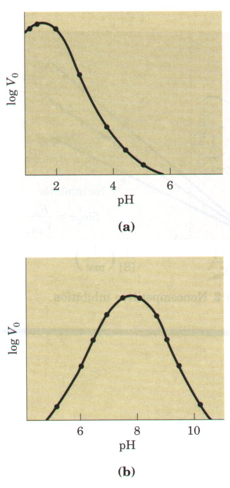 Figure 8-17 pH-activity profiles of two enzymes. Such curves are constructed from measurements of initial velocities when the reaction is carried out in buffers of different pH. The pH optimum for the activity of an enzyme generally reflects the cellular environment in which it is normally found. (a) Pepsin, which hydrolyzes certain peptide bonds of proteins during digestion in the stomach, has a pH optimum of about 1.6. The pH of gastric juice is between 1 and 2. (b) Glucose-6-phosphatase of hepatocytes, with a pH optimum of about 7.8, is responsible for releasing glucose into the blood. The normal pH of the cytosol of hepatocytes is about 7.2. |